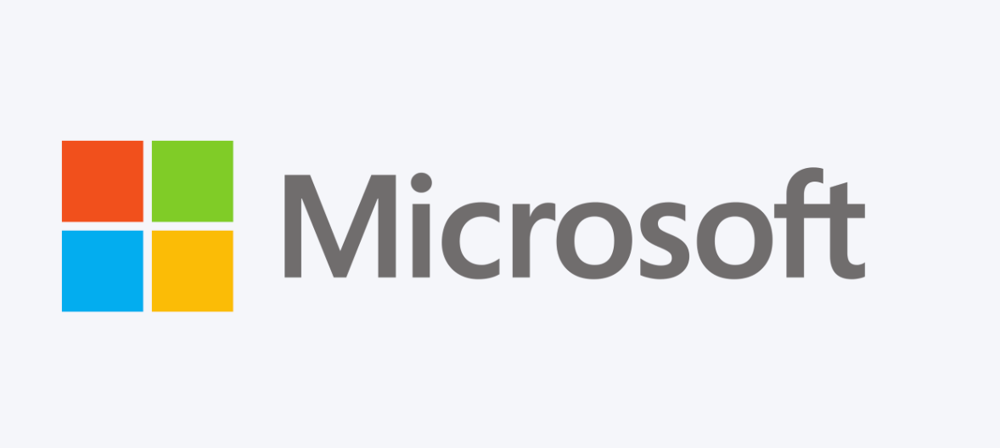
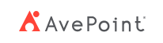
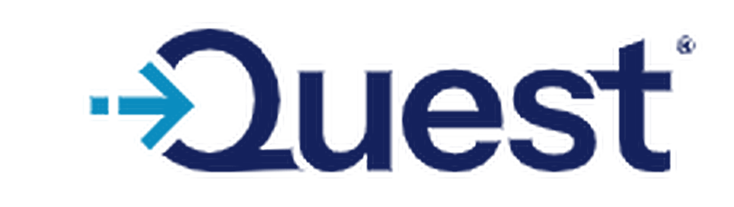
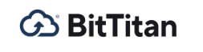
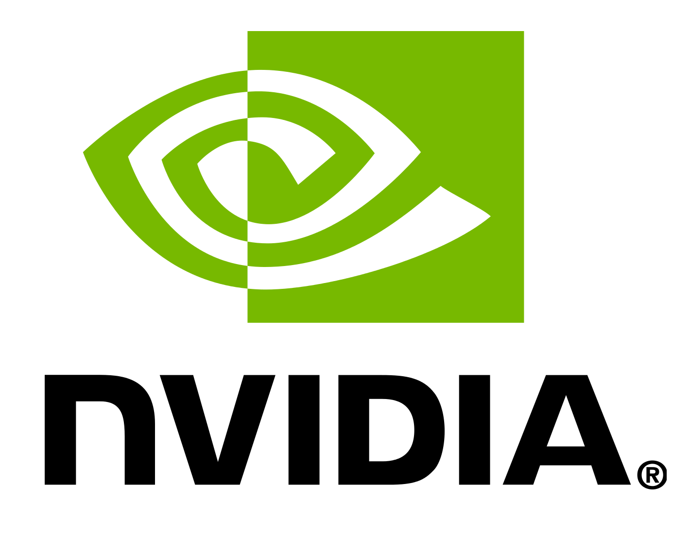
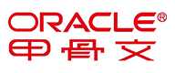
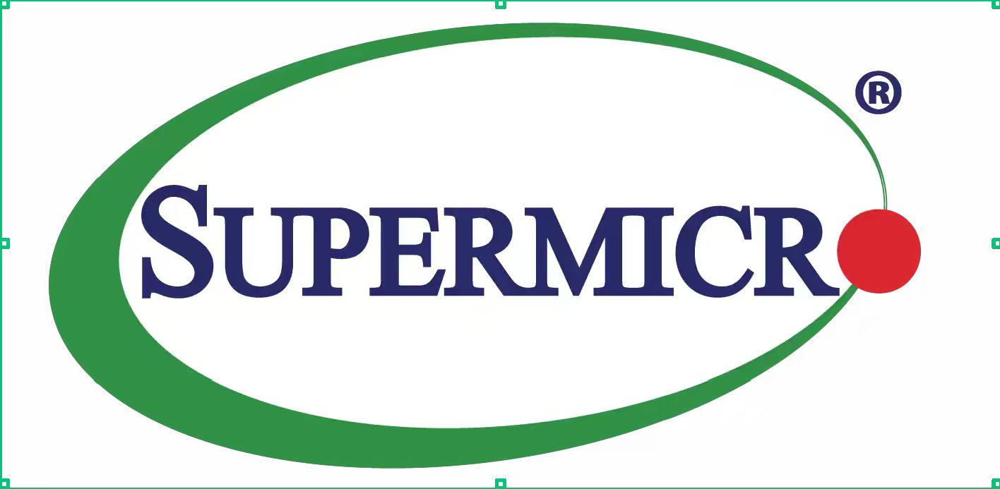

Microsoft 认证合作伙伴
作为微软认证合作伙伴，我们专注于 Microsoft 365、Azure 云平台及企业协作、身份与安全解决方案的部署、迁移与技术支持，帮助企业构建安全高效的云端办公环境。
覆盖办公室终端、本地服务器、网络、身份、云端和持续运维，从新办公室建设到现有环境升级均可提供支持。
为新员工、办公室扩建及设备更新提供标准化终端交付服务。
构建集中身份认证、计算机管理和内部资源访问环境。
面向中小企业办公室提供网络规划、设备部署和连接排查。
协助企业建立邮件、会议、协作、文件共享及管理员运营体系。
围绕企业账户、设备和数据访问建立基础安全控制。
连接本地 Active Directory 与 Microsoft 云端身份和协作服务。
为关键数据和业务系统设计可恢复的数据保护方案。
通过远程和现场支持处理日常问题并持续优化 IT 环境。
以清晰、可追踪的方式推进每一项 IT 建设、迁移和支持工作。
了解用户规模、现有设备、网络、服务器、云租户及业务目标。
整理工作范围、技术路线、迁移批次、风险点与验证标准。
按计划完成终端、服务器、网络、账号、数据和安全配置。
完成测试、问题收尾、管理员交接、文档记录和后续运维。

作为微软认证合作伙伴，我们专注于 Microsoft 365、Azure 云平台及企业协作、身份与安全解决方案的部署、迁移与技术支持，帮助企业构建安全高效的云端办公环境。

为 Microsoft 365 环境提供迁移评估、项目实施、云端备份、数据恢复和治理服务，覆盖企业常用协作工作负载。
面向服务器、虚拟化、Microsoft 365 与云端工作负载规划备份、恢复验证及业务连续性方案。

围绕 Active Directory、Microsoft Entra ID、Exchange 和 Microsoft 365 提供目录评估、环境整合与迁移支持。

适用于邮箱、文档和租户迁移项目，提供迁移评估、账号映射、批次编排、正式切换和结果验证。

提供 NVIDIA GPU 服务器与加速计算平台的选型、采购与部署支持，适用于 AI 训练与推理、图形渲染及数据中心算力扩展等场景。

提供 Oracle 数据库及企业应用系统的采购、部署与技术支持服务，协助企业完成本地或云端环境下的系统集成与运维。

提供 Supermicro 服务器、存储及数据中心基础设施的选型、集成与部署服务，支持企业按业务需求定制硬件配置。
Microsoft、NVIDIA、Oracle、Supermicro、AvePoint、Veeam、Quest、BitTitan 等名称及标志均为其各自所有者的商标或注册商标，本页面仅用于说明我们提供的相关技术服务与产品方向，并不代表隐含任何未经授权的认证、代理或合作关系声明。
结合 AvePoint、BitTitan、Quest、Veeam 等行业工具，覆盖 Microsoft 365 及企业环境中的常见迁移场景。
协助某企业将香港分公司 20+ 用户的 Microsoft 365 租户从集团母租户中拆分，迁移至独立新租户，完整保留邮箱、OneDrive 文件、Teams 频道与共享权限，并配置迁移后的定期云端备份。
协助企业从自建 IMAP 邮件服务器批量迁移至 Microsoft 365 Exchange Online，完成邮箱、通讯录与日历数据搬迁，支持分批切换与迁移后逐项核对。
为从 Google Workspace 切换至 Microsoft 365 的企业提供邮件、日历与联系人迁移，支持账号映射与分批上线，降低员工使用中断时间。
为企业规划从文件服务器或旧版协作平台迁移至 SharePoint / OneDrive 的方案，迁移过程中保留文件夹结构、版本历史与访问权限。
在企业合并或架构调整场景中，评估并整合多个 Active Directory 域，规范用户、计算机与组策略，降低身份管理复杂度。
为服务器与虚拟化环境规划迁移期间的数据备份与恢复方案，降低迁移过程中出现数据丢失或业务中断的风险。
电脑与外设安装、网络连接、Windows Server、本地域、用户账号、共享文件夹、打印设备和 Microsoft 365 一体化部署。
梳理本地 AD、Exchange、文件服务器和用户数据，规划混合身份、云邮箱、SharePoint、OneDrive 和 Teams 使用方式。
处理域名、用户、邮箱、OneDrive、SharePoint、Teams 数据及权限映射，支持分批迁移和正式切换。
整理管理员权限、MFA、条件访问、设备合规、终端防护、邮件安全、数据分类和备份恢复能力。
提供面向用户和管理员的常见问题处理、配置指导、远程协助及操作记录。
域名、用户、许可证、Exchange Online、Teams、SharePoint 与 OneDrive 配置支持。
迁移前评估、试迁移、正式切换、备份配置、恢复演练与实施记录。
Entra ID、MFA、条件访问、设备注册、Windows、Intune 与 Defender 支持。
海達科技（香港）有限公司 HAIDA TECHNOLOGY (HK) CO., LIMITED
香港中環德輔道中130-132號大生銀行大廈1205室
Room 1205, 12/F, Tai Sang Bank Building, 130-132 Des Voeux Road Central, Hong Kong
电话：+852 2813 5007 传真：+852 2811 4829